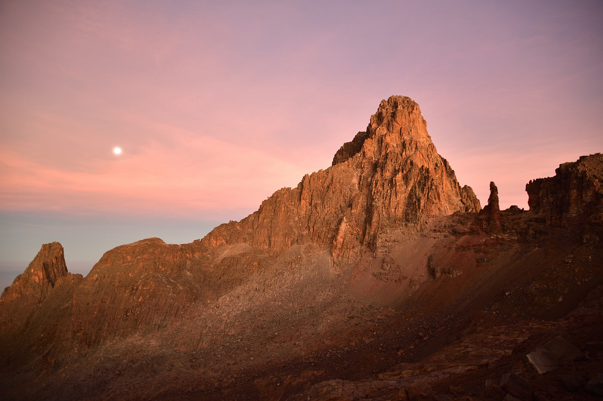

Mount Kenya is the second-highest mountain in Africa, located in Kenya. It is an extinct stratovolcano standing at approximately 5,199 meters (17,057 feet) tall. The mountain is known for its diverse ecosystems, breathtaking scenery, and cultural significance.

The best time to visit Mount Kenya largely depends on your preferences and the activities you plan to undertake. However, generally speaking, the dry seasons are considered the best times for trekking and climbing.
The two main dry seasons in Kenya are from January to March and from July to October. During these periods, you're more likely to encounter clear skies and dry weather, making trekking and climbing conditions more favorable. The visibility is also better, allowing for stunning views of the mountain and surrounding landscapes.
If you're primarily interested in wildlife viewing, you might also consider visiting during the dry seasons, as animals tend to congregate around water sources, making them easier to spot.
That said, Mount Kenya can be visited year-round, but the wet seasons (April to June and November to December) bring more rain, which can make trekking trails muddy and slippery. However, some visitors prefer the lush greenery and fewer crowds during these times.
African Elephant: Though not as common as in some other parks, elephants can still be found in the lower forested slopes and surrounding areas.
Buffalo: Buffalo can be found in the forested areas and open grasslands around the mountain.
Black and White Colobus Monkeys: These striking primates are often seen in the forested areas of the park, swinging through the trees.
Sykes' Monkeys: Another species of monkey commonly found in the forests around Mount Kenya.
Bushbuck: These antelope are often seen in the forested areas and along riverbanks.
Giant Forest Hog: A large pig species that inhabits the forested slopes of Mount Kenya.
Rock Hyrax: These small, furry mammals are often seen sunning themselves on rocks.
Various bird species: Mount Kenya is home to a variety of bird species, including the Hartlaub's Turaco, which is endemic to the region, as well as other species like sunbirds, eagles, and owls.